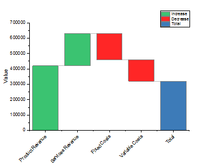
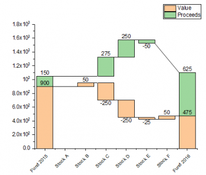
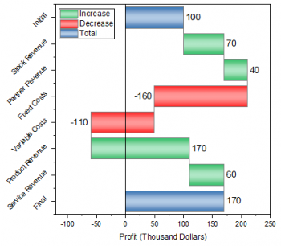

|  | |
|
|
|
|  |  |
|
|
|
Markieren Sie eine oder mehrere Y-Spalten (oder einen Bereich aus einer oder mehreren Y-Spalten). Wenn es eine verbundene X-Spalte gibt, stellt die X-Spalte die X-Werte bereit; ansonsten wird ein Abtastintervall der Y-Spalte oder Zeilennummer verwendet.
Anwender, die ihre Daten aufbereiten möchten, finden möglicherweise die LabTalk-Funktion diff() nützlich.
Wählen Sie die gewünschten Daten aus.
Wählen Sie .
(installiert im Origin-Programmordner)
BridgeChart.otpu
StackedBridgeChart.otpu
StackedTBridgeChart.otpu
HorizBridgeChart.otpu
Im Dialog Details Zeichnung gibt es die separate Registerkarte Brückendiagramm, die zum Festlegen der Elemente von Brückendiagrammen verwendet wird.
Außerdem finden Sie im Origin-Navigator (F11 oder Hilfe: Origin-Navigator) viele Diagrammbeispiele, die demonstrieren, wie Origin Brückendiagramme unterstützt.